展开阅读目录
- 速度、能耗与可制造性：第二版成果报告
- 01 · 比较之前，先固定条件
- 02 · A：在输出开关之前补充电荷
- 03 · A：改善在哪里发生
- 04 · A：用电荷计算解释结果
- 05 · B：降供电，必须保留顺应电压
- 06 · B：用单因素对照区分两个作用
- 07 · B：波形显示节能的边界
- 08 · MicroLED：通过点、失败点都保留
- 09 · VCSEL：减少一级缓冲，再处理副作用
- 10 · VCSEL：前馈为什么反而失败
- 11 · VCSEL：两次失败帮助定位改法
- 12 · VCSEL：接收改善与输入代价
- 13 · VCSEL：提速有效，能耗收益有边界
- 14 · MicroLED净3.2：还卡在哪里
- 15 · 用物理量判断下一种方法
- 16 · VCSEL净32需要新的链路预算
- 17 · 如何防止把仿真假象当改善
- 18 · 从Driver电路到可用的产品
- 19 · 现有版图做到哪里，新版还缺什么
- 20 · 新版物理设计要怎么做
- 21 · 向制造方交什么，怎样避免“做出却不能用”
- 22 · 下一阶段建议：先补会改变选型的证据
- 23 · 复现、来源与历史基线
- 从“跑得通”到“为什么变快”
- 01 · 先固定公平比较的边界
- 02 · 电流为何会跟不上数据
- 03 · A：逐级定位，而不是一起改尺寸
- 04 · A 的原因证据与修改依据
- 04B · A：同一时间轴上的逐级改善
- 05 · A：修改前后的晶体管仿真记录
- 05 · A：修改前后的晶体管仿真记录（续）
- 06 · B：门极变快，为何还不够
- 07 · B：用电容提供瞬态电荷
- 07B · B：电荷补偿的直接证据
- 08 · B：有效改善与失败尝试
- 08 · B：有效改善与失败尝试（续）
- 08B · 在同一 1.6 Gb/s 上比较 A/B
- 09 · VCSEL：输入与换流负载分别修改
- 10 · VCSEL：同速率的因果对照
- 10B · VCSEL：沿同一时间轴看改善
- 11 · 还有多少改善空间
- 11B · 回到净 3.2 Gb/s 的目标
- 12 · 更快不一定更省电
- 13 · 验证是否能站得住
- 14 · 从电路有效到版图可制造
- 14B · 保护关断不能继承旧结论
- 15 · 下一阶段研发顺序
第二版 · 2026-11-11 · 新方法、物理机制与产品路径
速度、能耗与可制造性：第二版成果报告
MicroLED A/B 与 VCSEL Driver。这个阶段实际测试三类不同方法：瞬态电荷补偿、降低虚支路供电、减少缓冲级数并阻尼。重点是解释改善的原因与代价，建立可继续开发的证据。
| 路线 | 本轮有效方法 | 最高已测通过 净 Gb/s | 边界 |
|---|---|---|---|
| A | N1 → RFF → CFF → OUT | 2.0 | 2.4失败；2.0时序余量很薄 |
| B | VIN 3.3 V + RDUMMY 27.6 kΩ | 1.8 | 2.0失败；保留旧5 V版2.0 |
| VCSEL | 单级交叉输入 + 150 Ω阻尼 | 8.8 | 更高速率本轮未测 |
相同净1.6 Gb/s：A能耗增加约7.95%，换来更宽时序与更小尖峰；B能耗降低约22.55%。VCSEL相同净6.4 Gb/s、两版均通过时，能耗降低约3.32%，时序余量扩大。
这些是名义条件、有限数据帧的原理图级联合筛查结果。不是最大物理带宽、硬件BER、连续运行效率或流片规格。MicroLED净3.2与VCSEL净32 Gb/s仍是尚未达到的研发目标。
第二版前半为新增实验与产品路径；后半保留第一版24页作为历史基线。旧页中的“本轮”指第一版，当前决策以前半部分为准。
第二版 · 2026-11-11 · 新方法、物理机制与产品路径
01 · 比较之前，先固定条件
| 项目 | MicroLED A/B | VCSEL |
|---|---|---|
| 负载 | 20 µm黄光静态参考；200 fF假设值 | 850 nm图读代理；150 fF |
| 封装 | 1 Ω / 0.5 nH | 0.5 Ω / 0.2 nH |
| 光学 / RX | 200 ps单极点 / 1 GHz | 保留前版光学代理 / 5 GHz |
| DC目标 | 25 / 100 µA，偏差≤1% | 3 / 7 mA，偏差≤1% |
| MOS / 温度 | GF180公共模型，TT / 27°C | GF180公共模型，TT / 25°C |
| 输入 | 20 ps PWL边沿 | 20 ps互补PWL边沿 |
净速率/线速率=32/37，每帧4736位，验证载荷4096位。训练评分标签为第64–511位，可见波形前缀截至第576位；验证为第576–4671位。相位只用训练前缀，不能借验证数据选相。
通过需要同时满足：训练与验证零错、最差幅度≥7.5 µAeq、单侧时间≥0.37线速率UI，以及DC、电压/体结筛查和负载模型电流范围。µAeq是接收代理归一化量，不是实测探测器电流。
E+为七个源端正向供能积分÷4096个尝试有效载荷位，单位pJ/bit；返还与净能量另记。它不是系统总能耗，也不是净热耗散；未通过点只保留诊断值。
A/B之间条件相同；VCSEL使用另一类负载、偏置和接收模型，不能直接把两者pJ数字排成同一系统的输赢。20 µm只是例子，尚未确定产品尺寸。
第二版 · 2026-11-11 · 新方法、物理机制与产品路径
02 · A：在输出开关之前补充电荷
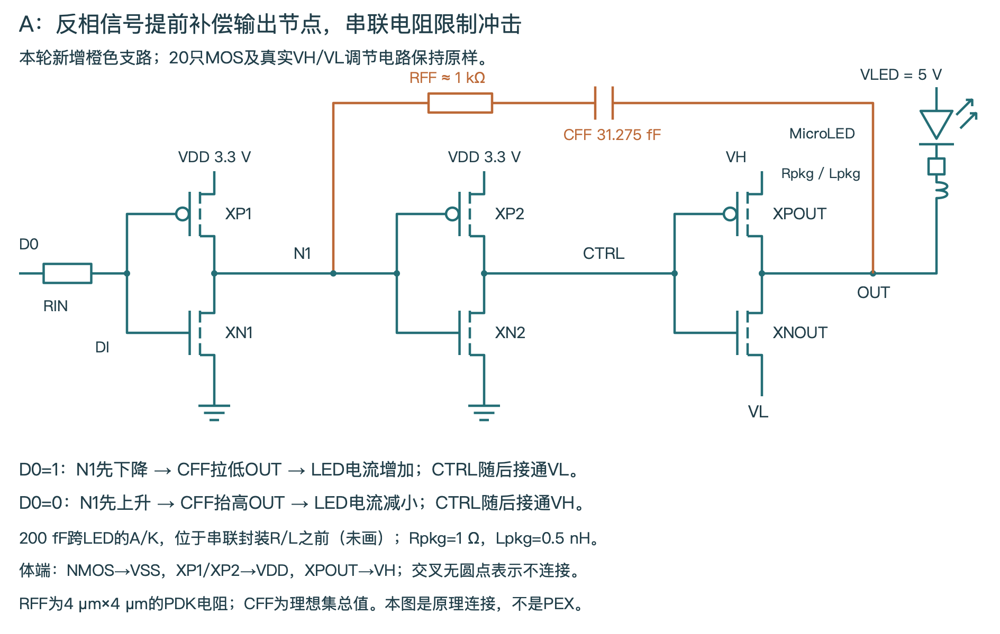
LED阳极电位固定时，阴极OUT降低会增加正向电压，使导电电流变大。主输出级CTRL较晚到达；N1提前翻转，因此可以先通过电容把OUT往正确方向推动。
RFF为PDK高阻多晶硅4×4 µm电阻；CFF=31.275 fF仍是理想集总。电容在DC开路，两态目标不变；高速时新增电荷通路与能耗。
第二版 · 2026-11-11 · 新方法、物理机制与产品路径
03 · A：改善在哪里发生
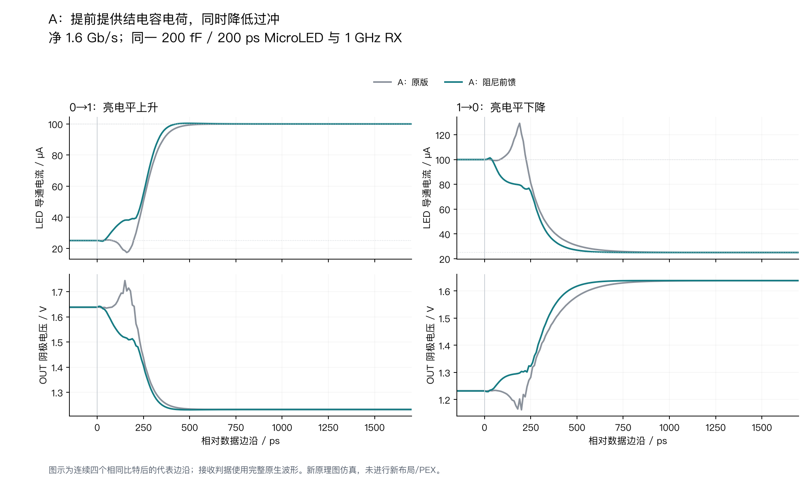
旧版在应变亮时先出现电流下冲，应变暗时先出现过冲。新增支路使初始变化方向正确，电流范围由17.19–129.89缩至24.58–101.86 µA；时间余量由216.92增至241.15 ps。
该现象与输出MOS栅漏耦合造成的反向初始跃变相符。本轮没有单独关闭或提取Cgd，不能把全部改善定量归给某一个寄生参数。
第二版 · 2026-11-11 · 新方法、物理机制与产品路径
04 · A：用电荷计算解释结果
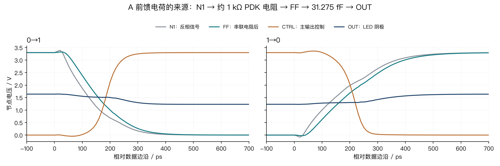
负载电容需要的电荷量级约为 CLED×ΔVOUT = 200 fF×0.4 V = 80 fC。选取连续四个相同比特后的边沿，前200 ps的CFF电荷变化约−67.62 / +50.43 fC，量级相当。
这些电荷主要改变节点电压，不等于全部通过LED复合发光。电流导通、电容位移电流和光功率必须分开，才能解释“尖峰变小但时序变好”。
同速E+从1.05783升至1.14188 pJ/bit。VDD端增加0.13541，VLED端减少0.05123 pJ/bit；新增CFF整帧储能变化仅−0.000255 pJ，不能解释源能量增量。
这是以额外数字开关能量换取瞬态质量。平均LED电流由64.643降至62.944 µA；相同DC目标不代表逐帧相同平均光功率。
第二版 · 2026-11-11 · 新方法、物理机制与产品路径
05 · B：降供电，必须保留顺应电压
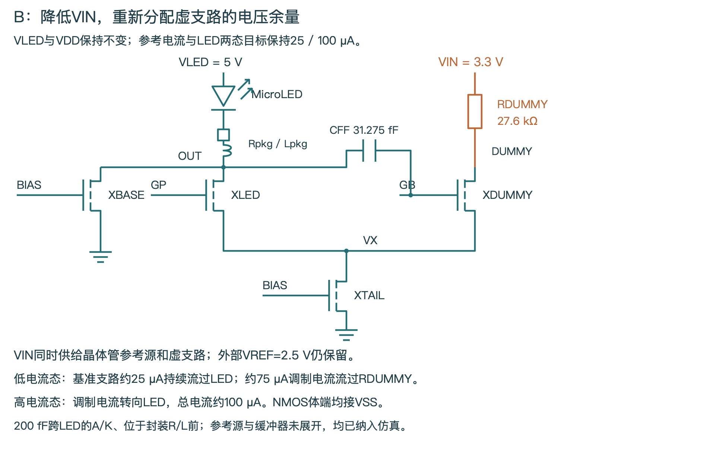
电流转向需要让未流向LED的约75 µA有合适的去路。虚支路压降过大时，开关和尾电流源失去顺应电压，切换时内部节点要经历更大恢复过程。
以DUMMY约1.23 V为目标：RDUMMY≈(3.3−1.23)V/75 µA≈27.6 kΩ。它不是随速率反复拟合的参数；冻结后用于全部数据率与留出验证。
第二版 · 2026-11-11 · 新方法、物理机制与产品路径
06 · B：用单因素对照区分两个作用
| 净1.6 Gb/s | E+ pJ/bit | 时间 ps | 峰值 µA |
|---|---|---|---|
| 旧版5 V / 50 kΩ | 1.09443 | 233.01 | 112.32 |
| 只降压3.3 V / 50 kΩ | 0.84394 | 201.88 | 123.90 |
| 降压+27.6 kΩ | 0.84759 | 229.80 | 113.36 |
只降压时，LED两态DC依然达标，但低态DUMMY只有0.3140 V、VX为0.2335 V，虚支路约59.72 µA。说明只检查LED稳态电流，可能漏掉内部换流工作点错误。
调整27.6 kΩ后，DUMMY=1.2256 V、VX=1.0362 V、虚支路约75.16 µA，接近旧版。相比只降压控制，仅增加0.00365 pJ/bit，却恢复27.93 ps时间余量并降低过冲。
VIN端正向能量由0.54628降至0.29871 pJ/bit，是主要节能来源。低压版在2.0 Gb/s只有157.52 ps，未到160 ps门槛，因此不能把该点的低pJ数值当成有效链路能效。
VIN与VDD虽同为3.3 V，仍是两套独立供电网络。外部VREF=2.5 V仍保留；尚未实现片上自给式带隙参考或合并电源。
第二版 · 2026-11-11 · 新方法、物理机制与产品路径
07 · B：波形显示节能的边界
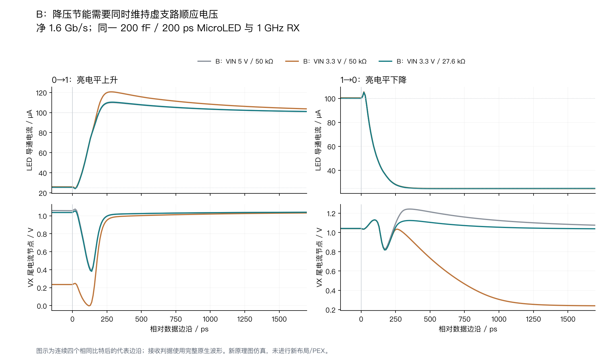
新B在1.8 Gb/s通过，时间余量190.97 ps，比门槛多约13.20 ps。2.0时只有零错位而没有足够时序，旧5 V版2.0仍作为更高速候选保留。
降低供电不保证所有速度都更好；电压余量、工作点恢复和器件过驱动共同决定边界。当前可保留高性能与节能两个工作点，产品模式如何切换还未设计。
第二版 · 2026-11-11 · 新方法、物理机制与产品路径
08 · MicroLED：通过点、失败点都保留
| 路线 / 净Gb/s | 错误 | 幅度 µAeq | 时间 ps | E+ pJ/bit | 联合筛查 |
|---|---|---|---|---|---|
| A 新RC / 1.6 | 0 | 17.35 | 241.15 | 1.1419 | 通过 |
| A 新RC / 2 | 0 | 10.04 | 161.61 | 1.0313 | 通过 |
| A 新RC / 2.4 | 0 | 2.78 | 77.00 | 0.9476 | 未过 |
| A 新RC / 3.2 | 650 | -11.06 | 0.00 | 0.8178 | 未过 |
| B 低压 / 1.6 | 0 | 20.35 | 229.80 | 0.8476 | 通过 |
| B 低压 / 1.8 | 0 | 16.72 | 190.97 | 0.7891 | 通过 |
| B 低压 / 2 | 0 | 12.86 | 157.52 | 0.7420 | 未过 |
| B 低压 / 3.2 | 259 | -4.93 | 0.00 | 0.5768 | 未过 |
A的2.0 Gb/s时序门槛为160 ps，实际约161.62 ps。留出片段仍通过，但只多约1.58 ps，不能直接作为产品额定值。B低压1.8的余量更宽；旧B5 V仍可在2.0通过。
A在2.4零错但幅度仅2.775 µAeq、时间77.00 ps，明显失败。零错只说明这帧的判决结果；距离边界很近的电路可能在下一种噪声、温度或码型下出错。
净3.2时，新A完整链650错，且电气-only虽零错但只有95.43 ps，低于100 ps门槛；旧A电气原本通过。新B完整链259错，但电气仍有120.19 ps并通过。因此新A还出现电驱波形代价，不能把失败全部归给光学/RX。
最高通过是离散测试点，不是连续扫频找到的最大速率。失败行的E+仅作诊断，不参与可靠有效载荷能效排名。
第二版 · 2026-11-11 · 新方法、物理机制与产品路径
09 · VCSEL：减少一级缓冲，再处理副作用
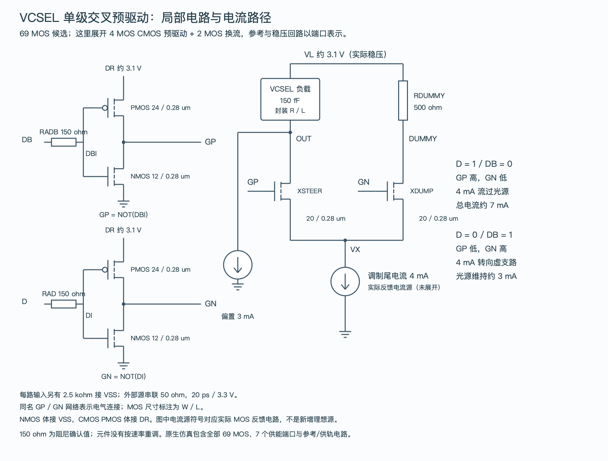
最终GP与GN仍驱动原来的电流转向管；偏置约3 mA、调制约4 mA，实际参考调节与激光供电保留。减少级数减轻内部开关负载和脉冲失真，但让上游输入直接驱动更大的栅电容。
“级数更少”并非通用最优。只有在输入接口足够强、极性正确、峰值与接收都合格时，删级才成立；产品需要真实PHY、PAD/ESD与封装联仿。
第二版 · 2026-11-11 · 新方法、物理机制与产品路径
10 · VCSEL：前馈为什么反而失败
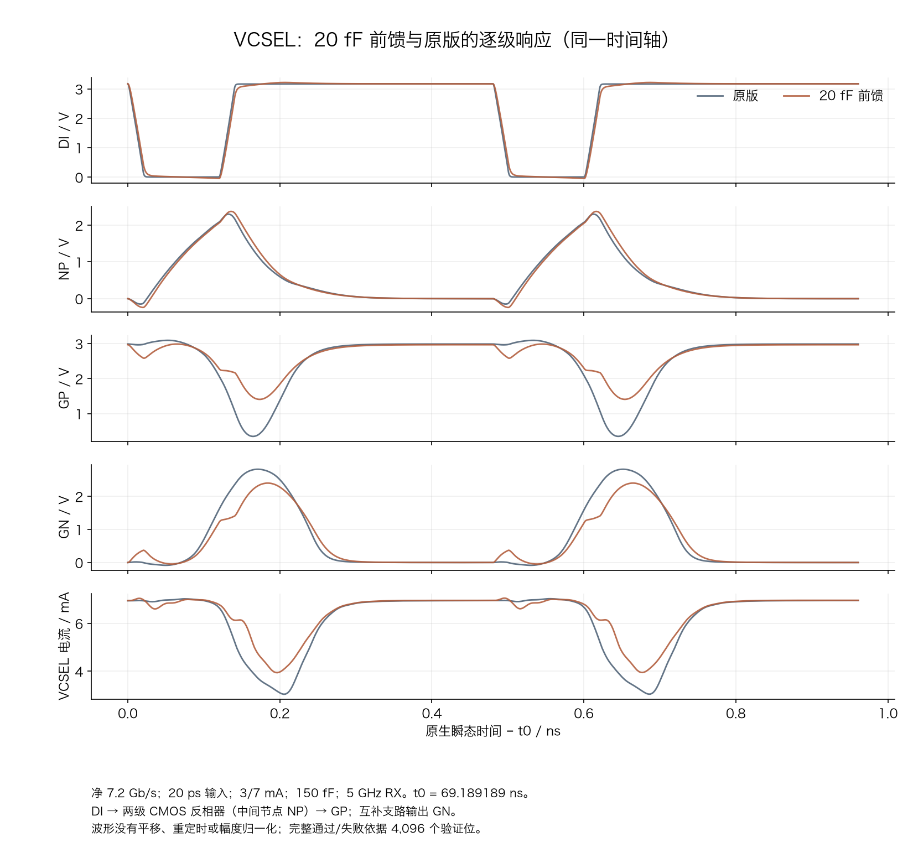
从输入直接补充门极电荷，最初看似能提前动作，但主缓冲与前馈作用不匹配。输入下降后GP先降至约2.584 V，又在80 ps内回到约2.988 V；低脉冲未充分拉低，LED低谷从约3.039升至3.940 mA。
净7.2 Gb/s虽零错，时间余量仅0.159 UI，E+=5.434 pJ/bit，较旧版更差。阈值交叉数没有增加，证据支持脉冲压缩与回弹，不支持“出现额外双重翻转”。
前馈不是一加就有效；符号、注入节点、相位、负载阻抗与主驱动恢复过程都要一致。40 fF候选只预留，未执行，不列作实测结果。
第二版 · 2026-11-11 · 新方法、物理机制与产品路径
11 · VCSEL：两次失败帮助定位改法
| 试验 / 净7.2 Gb/s | 观测 | 判断 |
|---|---|---|
| 降低预驱动轨约3.1→2.45 V | E+约5.039 pJ；230位错误；幅度−4.37 µAeq | 摆幅减小同时损失过驱动，当前方法不成立 |
| 单级，RAD/RADB=50 Ω | 时间0.4463 UI；E+5.1293 pJ；峰值7.584 mA | 接收改善，但超出固定7.5 mA模型上界 |
| 单级，RAD/RADB=100 Ω | 时间0.4485 UI；峰值7.5155 mA | 峰值下降，仍不合格 |
| 单级，RAD/RADB=150 Ω | 时间0.44894 UI；峰值7.44753 mA | 当前联合筛查通过 |
输入阻尼限制边沿过快造成的门极/输出耦合。在删掉一级后的较大直接栅负载上，阻尼增加可能压低过冲；但过大也会拖慢切换，因此必须同时检查眼图和峰值。
用50→100 Ω两点得到局部峰值斜率约−1.376 µA/Ω。为保留约50 µA模型余量，计算选150 Ω，预测7.44669 mA，实际7.44753 mA。这是局部经验估算经第三点确认，不是可无限外推的定律。
7.5 mA是所用公开图读负载模型的拟合范围上界，并非实物校准结果或VCSEL绝对最大额定电流。越界意味着模型不能支持结论，不能直接解释成器件损坏。
第二版 · 2026-11-11 · 新方法、物理机制与产品路径
12 · VCSEL：接收改善与输入代价
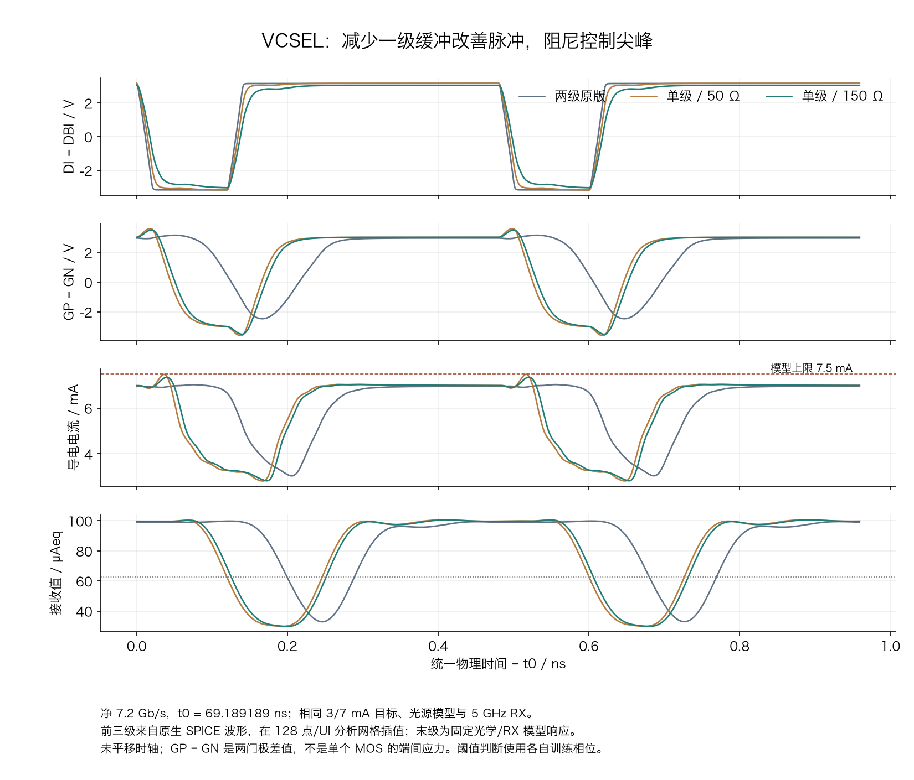
在净7.2 Gb/s，新版输入源峰值电流约7.411 mA，旧版约3.561 mA，约2.08倍。每路内部RAD/RADB=150 Ω之外仍串固定50 Ω源电阻；七源能量已计入，但真实PHY限流、内部损耗和频变/非线性输出阻抗未建模。
本轮体结正向筛查上限固定0.3 V。新版GP相关体结约0.264 V，超过0.25 V的单段最长约5.26 ps；通过当前研究筛查，不代表已通过代工厂可靠性/ERC要求。
这项改善把部分负担从片内缓冲转给输入接口。若真实FPGA/SerDes无法提供该电流和边沿，收益可能缩水，必须把接口纳入下一轮闭环。
第二版 · 2026-11-11 · 新方法、物理机制与产品路径
13 · VCSEL：提速有效，能耗收益有边界
| MOS / 净Gb/s | 时间 / UI | E+ pJ/bit | 峰值 mA | 联合筛查 |
|---|---|---|---|---|
| 旧73 / 6.4 | 0.3810 | 5.8802 | 7.0783 | 通过 |
| 新69 / 6.4 | 0.4633 | 5.6850 | 7.4335 | 通过 |
| 旧73 / 7.2 | 0.3307 | 5.2740 | 7.0819 | 未过 |
| 新69 / 7.2 | 0.4489 | 5.1133 | 7.4475 | 通过 |
| 旧73 / 8 | 0.2396 | 4.7698 | 7.0830 | 未过 |
| 新69 / 8 | 0.4344 | 4.6539 | 7.4759 | 通过 |
| 新69 / 8.8 | 0.4324 | 4.2754 | 7.4715 | 通过 |
严格同速、两者均通过的6.4 Gb/s：E+由5.88021降至5.68495 pJ/bit，降低3.32%；时间余量由0.38104增至0.46333 UI。8.8是本轮最高已测通过点，更高速率尚未验证。
显式供轨/补偿电容的帧内释放能量，旧版约282.2 pJ、新版176.6 pJ；新版少借约105.6 pJ，源端节省约799.8 pJ。该检查支持节能并非靠更多借用这些电容，但不构成全电路稳态能量闭合。
新版6.4→8.8的pJ下降时，帧平均正向源功率反从约36.384升至37.624 mW。每比特能量改善不等于总发热下降，源端功率也不是完整热耗散测量；32 Gb/s仍未实现。
第二版 · 2026-11-11 · 新方法、物理机制与产品路径
14 · MicroLED净3.2：还卡在哪里
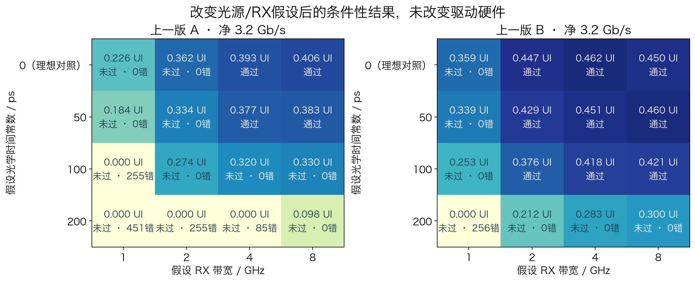
200 ps光学时间常数对应单极点约0.796 GHz。固定它时，即使把假设RX带宽从1增至8 GHz，原版A/B也没有通过当前联合接收门槛。提高RX带宽并不能自动弥补发光响应。
条件性通过例子：A在假设50 ps光学时间常数、4 GHz RX时约0.3772 UI；B在100 ps、2 GHz时约0.3762 UI。它们为器件和接收器提出需求，不证明已有对应光源、噪声性能或功耗。
这张图没有把新RC版A或低压B的波形混进去，也没有用改模型来冒充Driver改进。更快光源、真实RX以及预加重需作为独立假设继续验证。
第二版 · 2026-11-11 · 新方法、物理机制与产品路径
15 · 用物理量判断下一种方法
| 机制 | 为什么可能有效 | 为什么也可能失败 |
|---|---|---|
| 栅极/输出RC | t约随R×C增加；减少串级或负载可提速 | MOS变小会增大导通阻抗；删级加重输入负担 |
| 边沿电荷 Q=CΔV | 提前提供充放电电荷，缩短建立时间 | 相位或注入点错误会回弹、脉冲压缩及过冲 |
| 降低电压 | 开关负载能量近似随CΔV²下降；静态功耗随VI变化 | 过驱动/顺应电压减少；线性稳压上游能量未必同比下降 |
| 电流转向 | 偏置保持、调制电流在两支路分配 | 虚支路仍耗能；匹配、尾源和寄生限制切换 |
| 光源动力学 | MicroLED载流子寿命、RC；VCSEL弛豫振荡与阻尼 | 尺寸、偏置、温度与封装共同作用，不能按波长单变量排名 |
本轮驱动MOS仍是硅CMOS，03v3/06v0是器件选项差异；没有改用GaN功率MOS。III-V发光材料与硅驱动芯片是不同对象，不能用MicroLED或VCSEL的材料名称替代ASIC工艺。
功耗更低的目标应是达到指定接收可靠性时的系统pJ/bit。单独把偏置电流压低，可能降低带宽、光功率或信噪比；VCSEL偏置还需要考虑激射阈值及其温漂。
本轮模型未包含完整载流子/光子速率方程、随机噪声或自热，因此不能从这些波形推定真实器件的极限。
第二版 · 2026-11-11 · 新方法、物理机制与产品路径
16 · VCSEL净32需要新的链路预算
净32 Gb/s按当前32/37开销对应37 Gb/s线速率，单UI约27.03 ps。当前PWL输入的0–100%边沿20 ps已占约74% UI；5 GHz RX单极点时间常数约31.83 ps。即使输出开关进一步变快，现有整条链路条件也需要重新评估。
| 后续候选方法 | 依据 | 必须验证 |
|---|---|---|
| 可编程边沿预加重 | 公开VCSEL驱动研究使用过预加重；本轮被动前馈失败提示相位重要 | 受控延迟、极性、脉宽和峰值；不能套用论文数字 |
| 输出阻抗/匹配联合优化 | 减少反射与封装谐振；适配真实激光器端口 | S参数、PAD/ESD、带宽/功耗和工艺角 |
| 更小摆幅/电流复用 | 公开28 nm CMOS研究展示过低功耗短距收发器 | 必须有足够过驱动、参考与输出顺应电压 |
| 更快工艺与真实高速PHY | 减少逻辑/栅电容延迟，同时解决输入边沿 | 完整授权PDK、器件fT/fmax与噪声/可靠性模型 |
IBM 2005报道130 nm、20 Gb/s预加重及输出阻抗调节；Yazaki 2018报道65 nm、25 Gb/s/ch；Yang 2025的28 nm独立TX为25 Gb/s、39.8 mW≈1.59 pJ/原始位，完整链路测试为20 Gb/s。
文献条件、编码与能源范围不同；它们支持继续研究这些方法，不代表本项目GF180已复现，也不是改换工艺后必然达到的承诺。
第二版 · 2026-11-11 · 新方法、物理机制与产品路径
17 · 如何防止把仿真假象当改善
| 检查 | 本轮做法 | 仍不能证明 |
|---|---|---|
| 输入与源文件身份 | 原始PWL、网表、模型及执行脚本SHA绑定 | 使用错误模型但自洽的结果也可能存在 |
| DC与应力 | 两态DC；原生采样的MOS端压、体结及电流域 | PVT、随机失配、长期可靠性 |
| 数值复核 | 最终候选S40→S80；新PRBS15窗口0x4c2d | 任意码型、噪声与统计BER |
| 独立审查 | 重新计算七源能量、应力、32格光/RX矩阵 | 物理硬件与光学模型真实性 |
| 训练隔离 | 破坏验证区间的反事实检查不改变训练选相 | 真实时钟恢复和接收抖动容限 |
新留出窗口位于PRBS15周期[27081,31817)，与开发窗口及第一版留出不重叠。电路参数在查看留出结果之前冻结，不因留出结果重新调参。
A2.0与B1.8均通过S80及新窗口；A留出仅多约1.58 ps时序余量，B约13.03 ps。VCSEL8.8新窗口零错、0.43281 UI、E+=4.27821 pJ/bit，峰值7.47256 mA，距模型上界仅27.44 µA；S80也通过。
每帧4096载荷位且无随机噪声。即使零错，也不能宣称BER为零或达到10⁻¹²；没有条件支持把它当随机独立伯努利误码试验。
独立科学审查 · MicroLED筛查 · VCSEL筛查
第二版 · 2026-11-11 · 新方法、物理机制与产品路径
18 · 从Driver电路到可用的产品
产品链路包括：数据源/SerDes → 输入接口与PAD/ESD → 预驱动 → 电流调制 → 封装与发光器件 → 光通道 → 接收/TIA/时钟恢复。参考、供电、启动与保护贯穿整条链路。
| 尚缺的边界 | 为什么影响结论 | 下一步交付 |
|---|---|---|
| 真实输入PHY | 69MOS方案转移了瞬态栅驱动负担 | 有限输出阻抗、摆幅、抖动、PAD/ESD联合模型 |
| 自主参考/供电 | A/B仍依赖2.5 V外部参考；VCSEL仍用VSET/VREGSET外部精密基准 | 参考容差、PSRR、噪声、温漂和上游电源静态功耗 |
| 启动/故障关断 | A未实现DISABLE；前馈可在关断时传递边沿电荷 | 上电顺序、掉电、输入持续翻转、过温/开短路测试 |
| 完整能量与热 | 供轨大电容会在有限帧中释放储能 | 连续通信稳态、热边界、全源能量闭合 |
本轮已经包含实际实例化电源与输入端口能量；没有实例化的参考IC、上游驱动内部、RX/主机和转换效率仍在范围之外。报告不把这些开销视为零。
第二版 · 2026-11-11 · 新方法、物理机制与产品路径
19 · 现有版图做到哪里，新版还缺什么
| 已有独立证据 | 当前状态 | 不能继承给本轮 |
|---|---|---|
| 显示analog r5 | 39 MOS；345 R / 288 C；29/29网络，既有DRC/LVS/PEX | 新高速A/B/VCSEL连接与器件已改变 |
| 显示joint-r2 | 7277 MOS；36588 R / 30230 C；6512/6512网络 | 全瞬态回归未完成，未含完整PAD/ESD/封装 |
| 旧高速A/B核心 | 旧A 95 R / 64 C；旧B 127 R / 76 C | 新参考/前馈/供电/输入不能用旧PEX替代 |
| 当前新增候选 | 可追溯原理图、晶体管瞬态及接收计算 | 尚无匹配的新GDS、DRC/LVS/PEX签核 |
本地锁定的GF180物理选项为5LM_1TM_11K，指金属互连选项，不代表芯片只有5层材料或5张掩模。MOS、阱、接触、通孔、钝化和BEOL需要完整工艺层映射。
显示joint-r2边界916×204 µm≈0.186864 mm²仅是该宏单元包围盒，不是可封装裸片面积。PAD间距、ESD、供电、测试和封装约束往往决定最后die边界。
显示PWM支线的1 MHz计数时钟/256≈3.90625 kHz PWM，不能宣传为1 MHz载波或已验证0.15–7.33 mA量产范围。
第二版 · 2026-11-11 · 新方法、物理机制与产品路径
20 · 新版物理设计要怎么做
| 步骤 | 具体工作与验收 |
|---|---|
| 选定工艺与接口 | 先锁定制造方接受的PDK、器件/金属/MIM选项、PAD/ESD与封装接口 |
| 分区与匹配 | 快速差分路径对称；基准/电流镜隔离数字噪声；补偿和回流尽量短 |
| 井与器件规则 | GF180未编码规则DN.Note1禁止3.3 V和6 V器件共用同一DNWELL；需要按选项单独布置 |
| 电阻与电容实现 | RFF/RDUMMY的几何、寄生、容差、电流密度；CFF的底板、连线与开关耦合 |
| DRC / LVS / ERC / PEX | 检查几何、连接、供电/体端规则；各寄生角重新跑同一接收与能量合同 |
| 电源/封装 | 静态IR+动态供轨阻抗、EM、电感耦合与S参数；必要时3D电磁与热分析 |
开源ngspice、Magic/KLayout、Netgen、OpenROAD等可以继续支持开发与许多检查，但每项工具必须绑定匹配的PDK和规则。OpenRCX需要对应工艺/角的提取规则；静态PDNSim不能代替GHz电源动态与完整EM/热签核。
GF180未编码规则 · OpenRCX · PDNSim
二维GDS看几何，Blender三维图帮助理解层次；两者都不能单凭可视化证明电磁、热、工艺或可靠性正确。本轮未新做版图或3D仿真。
第二版 · 2026-11-11 · 新方法、物理机制与产品路径
21 · 向制造方交什么，怎样避免“做出却不能用”
| 交付对象 | 数据包 | 前提 |
|---|---|---|
| 晶圆/MPW制造方 | 层次GDSII、top cell/单位/layer map、工艺与金属选项、签核报告/waiver、版本与SHA清单 | 以对方书面接受的完整PDK和交付清单为准 |
| 封装与光学装配方 | 裸片与PAD坐标、pin/bond map、极性与电源、封装/散热/光学接口、测试要求 | 封装寄生与机械/热/光耦合预先联仿 |
| 测试方 | 测试模式、向量与限值、探针/板卡、校准步骤、I–V/L–I/S21/眼图/BER/温度计划 | 设置观测点、偏置监测与可调参数，先留诊断能力 |
在流片前约定每个失效如何被观察：参考启动失败、输出饱和、输入不够快、封装振铃、光源带宽不足和RX噪声都需要可区分。保留偏置/调制可编程、内部监视节点、慢速测试与PRBS模式会提高首轮样片的学习价值。
截至2026-11-11，Google公开GF180仓库显示已归档且开放版本标注Experimental Preview。这不等于商业GF180工艺停产，也不代表本项目版本已被制造方接受。需确认实际服务方、完整规则与生产选项。公开PDK状态 · GF180交付检查
当前还不能发送为“可流片设计”。价格、良率和量产可行性要在规格、die面积、封装、测试时间、产量及真实报价明确后评估，现阶段不编造成本。
第二版 · 2026-11-11 · 新方法、物理机制与产品路径
22 · 下一阶段建议：先补会改变选型的证据
优先一：接口、能量与保护闭环
固定本轮电路，在真实输入阻抗/限流/抖动下重测VCSEL单级方案；对A/B与VCSEL完成连续通信稳态及储能闭合。补A关断、B前馈旁路抑制、启动/掉电/数据持续翻转保护。它们会直接决定改法能否落地。
优先二：从单点通过扩展为稳健工作区
以A2.0、B低压1.8、VCSEL8.8作为名义边界候选，另选更保守工作点做PVT、独立电阻/电容角、负载与封装变化。A仅1.6 ps额外时序、VCSEL峰值距模型上界几十µA，均不宜直接定额定速度。
优先三：按链路需求选择器件，再做完整新版图
MicroLED净3.2需要真实光学S21和RX数据；VCSEL净32需要重新配置输入、光源、RX和工艺预算。取得可追溯器件/封装数据后验证可编程预加重、阻抗匹配等方法，再决定是否迁移工艺与进入新版图。
可持续协作的方式是：每一阶段锁定假设 → 实施单项变化 → 保留成功与失败 → 独立复查 → 更新报告与备份。我可以继续承担设计、仿真、版图与资料工作；制造商接受、实物测量和生产认证仍需相应外部资源。
第二版 · 2026-11-11 · 新方法、物理机制与产品路径
23 · 复现、来源与历史基线
本轮来源和范围逐项列在产品化详细说明、19项公开一手来源、11项流片门槛。公开论文按实际器件、调制、接收和能量口径引用，未复制商业设计。
| 证据 | 用途 |
|---|---|
| micro-summary / micro-selection | 逐个DC/速率/步长/留出结果，网表与原生波形SHA |
| micro-causal / micro-mechanisms | A的电荷与B的内部工作点、七源能量分解 |
| vcsel-methods / vcsel-comparison | 成功与失败电路、源端能量、负载域与复查 |
| scientific-validation | 独立重算、训练隔离、冻结前后摘要一致性 |
| link-sensitivity | 旧A/B的32格条件性光学/RX预算 |
| reproduce / Release清单 | 跨电脑恢复、脚本版本、环境与大文件范围 |
完整复现步骤 · 第一版冻结报告 · 上一版原始证据Release
下列附录保留第一版24页内容与图表，便于追溯原始架构改善。它们的当时最高通过点不再是本版最新结论；历史版图与仿真资格也不会自动继承给新电路。
历史附录 · 第一版第01/24页 · 仅作基线追溯
从“跑得通”到“为什么变快”
MicroLED A/B 与 VCSEL Driver 电路改进及验证报告。研究重点是把技术难点变成可验证的假设，再用单项修改解释性能变化。
| 路线 | 本轮候选 | 最高通过测试点 净 Gb/s | 下一失败测试点 净 Gb/s |
|---|---|---|---|
| A | A 六管核心03v3 | 1.60 | 1.80 |
| B | B 前馈31.275fF | 2.00 | 2.40 |
| VCSEL | VCSEL 输入 + 换流改进 | 6.40 | 7.20 |
此前最高已测试通过点分别为 A 1.2、B 0.4、VCSEL 4.8 Gb/s。本轮 A 通过减小输入 RC、改用较快核心器件和重校输出轨改善；B 通过前馈电容补充瞬态电荷改善；VCSEL 通过输入电阻及换流管尺寸优化改善。
通过点同时检查直流匹配、训练与验证错误、接收幅度、时序及器件应力。它不是精确最大速率、实物 BER、PVT 签核或量产规格。
A/B 保持相同的 MicroLED 负载和接收条件；VCSEL 使用其独立的 850 nm 模型与接收器。最终产品路线仍未选定。C 暂缓，不把当前译码器失效等同于 PAM4 技术路线不可行。
前阶段报告保留原始基线；本报告只扩展经过本轮实际求解的改善和限制。
历史附录 · 第一版第02/24页 · 仅作基线追溯
01 · 先固定公平比较的边界
| 项目 | MicroLED A/B | VCSEL |
|---|---|---|
| 发光负载 | 20 µm 黄光静态 I–V 参考；200 fF 假设电容 | 850 nm 图读模型；150 fF |
| 封装 | 1 Ω / 0.5 nH | 0.5 Ω / 0.2 nH |
| 光学 / 接收 | 200 ps 单极点 / 1 GHz 接收极点 | 原光学代理 / 5 GHz 接收极点 |
| 直流目标 | 25 / 100 µA | 3 / 7 mA |
| 本轮名义条件 | GF180；TT、27°C、VDD 3.3 V | GF180；TT、25°C、VDD 3.3 V |
| 外部数据边沿 | 20 ps | 20 ps |
每帧 4736 位，其中 4096 位为独立验证载荷，净速率 / 线速率 = 32/37。每个新速率都生成真实 PWL 并重新运行 ngspice，未缩放已有波形。
接收相位只由训练段选择。主判据为训练、验证均零错，最差有符号幅度 ≥7.5 µAeq、单侧时间余量 ≥0.37 线速率 bit UI。另检查 MOS 端间电压、体结正向电压 ≤0.3 V、模型电流范围。
同一“直流目标”不等于同一“瞬态峰值”。若加入预加重，必须单列峰值、平均电流和能量。所有 µAeq 为研究模型归一化电气量，不是光探测器实测电流。
历史附录 · 第一版第03/24页 · 仅作基线追溯
02 · 电流为何会跟不上数据
MicroLED 电流分为导电电流和结电容充放电电流。能发光的是导电分量；电容电流先改变端电压。驱动器必须同时满足两者，而不仅是让门极出现正确的 0 和 1。
I端口 = I导电 + C × dV/dt；所需电荷 Q = C × ΔV。
| 局部估算 | 结果 | 含义 |
|---|---|---|
| 25 → 100 µA 电平 | LED 正向电压变化约 0.407 V | 来自冻结静态 I–V 插值 |
| 200 fF 电容 | Q ≈ 81 fC | 需要从输出端移动的电荷 |
| 净 3.2 Gb/s，半个 UI | 约 135 ps，需要约 0.60 mA | 是额外位移电流预算，不是直流电流 |
| 25 µA 附近的 rd × C | 约 2.15 ns | 低位恢复可能出现长尾 |
| 100 µA 附近的 rd × C | 约 0.59 ns | 电流不同，动态阻抗也不同 |
rd 是静态 I–V 的局部微分电阻。以上 RC 只用于解释机理，未包含驱动输出导纳、封装和大信号时变效应，不能直接当作整个链路的截止频率。
历史附录 · 第一版第04/24页 · 仅作基线追溯
03 · A：逐级定位，而不是一起改尺寸
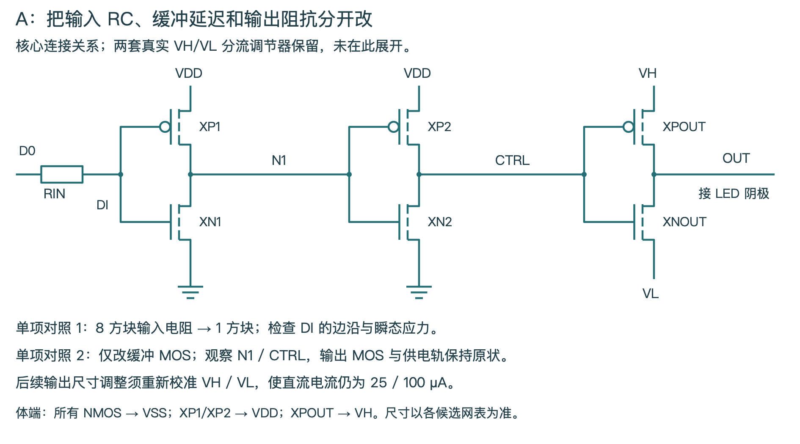
先观察 D0 → DI → N1 → CTRL → OUT → LED 导电电流。在稳定长码型前后测量同一极性的过阈延迟，分清输入 RC、反相器内部延迟和输出电压建立时间。
N1 驱动第二级，CTRL 驱动输出对。NMOS 的源端为 VL、体端为 VSS；PMOS 的网表源和体端接 VH。稳态时 LED 电流可从 OUT 经 PMOS 流入 VH 分流轨；瞬态拉高阴极时，电荷可由轨电容提供。
数字缓冲和模拟输出具有不同的耐压、驱动和负载要求。“改用更快 MOS”不是全芯片一键换型。
历史附录 · 第一版第05/24页 · 仅作基线追溯
04 · A 的原因证据与修改依据
| 长码型过阈时间中位数 | 原版：下降 / 上升 | 仅降低输入 R 后 |
|---|---|---|
| DI | 63.3 / 66.0 ps | 19.3 / 19.6 ps |
| CTRL | 474.5 / 403.9 ps | 368.1 / 304.6 ps |
| OUT 电压中点 | 837.0 / 704.2 ps | 730.9 / 604.0 ps |
原版第一级反相器自身还增加约 196～293 ps，第二级约 118～142 ps，输出级约 300～363 ps。因此输入电阻降低确实有效，但不能解释或消除全部延迟。
在净 1.6 Gb/s，RIN 单项修改使幅度余量从 2.54 增到 6.40 µAeq，单侧时间从 94.17 增到 147.69 ps，仍未满足 200 ps 的本速率门槛。4 µm × 4 µm 的宽电阻对照保留了相近改善。
下一项只把四只预驱动 MOS 改为 3.3 V、L=0.28 µm 器件，输出与 5 V 供电调节器保留 6 V MOS。此时 1.6 Gb/s 时序提高到约 191.84 ps，但仍略不足；才进一步检查输出电阻及尺寸。
输出管加宽后必须重新校准 VH/VL；该方案虽增大眼高，时序仍未过，且电流峰值与能耗增加。最终把输出两管也改为03v3、L0.28µm并保持原宽度，重新拟合RH/RL；六管核心03v3配合14管06v0真实轨发生器，才在1.6Gb/s通过。
最终 RH≈185.509 kΩ、RL≈93.448 kΩ，DC 为 24.997/99.985 µA。选定改版的 CTRL 中位延迟约161.6/144.0 ps、OUT约330.7/250.7 ps；这种逐级缩短与接收改善相互支持，不能把延迟倍数当吞吐倍数。
这些是原生波形中的条件性过阈延迟，不是随机抖动或全码型最坏传播延迟。63 个下降和 76 个上升的已定义长码型事件用于本次机理比较。
历史附录 · 第一版第06/24页 · 仅作基线追溯
04B · A：同一时间轴上的逐级改善
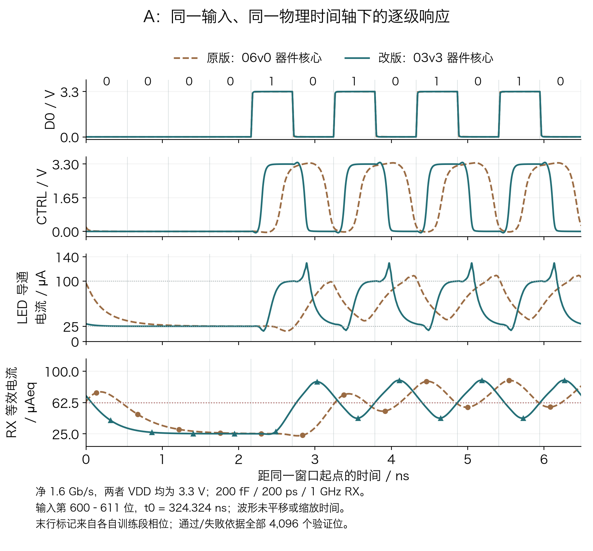
观察顺序是输入 D0 → 输出门极 CTRL → LED 导电电流 → 完整接收模型。图中改版 CTRL 更早翻转，导电电流建立更快，但瞬态尖峰也增大；最终判断使用整帧和应力数据。
历史附录 · 第一版第07/24页 · 仅作基线追溯
05 · A：修改前后的晶体管仿真记录
| 候选 / 净 Gb/s | 位错 | 幅度 µAeq | 时间 bit UI | E+ pJ/尝试位 | 联合筛查 |
|---|---|---|---|---|---|
| A 原版 / 1.20 | 0 | 19.25 | 0.417 | 1.154 | 通过 |
| A 原版 / 1.60 | 0 | 2.54 | 0.174 | 0.962 | 未通过 |
| A 输入R降低 / 1.60 | 0 | 6.40 | 0.273 | 0.964 | 未通过 |
| A 输入R加宽 / 1.60 | 0 | 6.43 | 0.275 | 0.966 | 未通过 |
| A 缓冲03v3 / 1.60 | 0 | 9.92 | 0.355 | 1.013 | 未通过 |
| A 缓冲03 + 输出加宽 / 1.60 | 0 | 14.11 | 0.359 | 1.156 | 未通过 |
| A 六管核心03v3 / 1.20 | 0 | 26.10 | 0.450 | 1.229 | 通过 |
| A 六管核心03v3 / 1.60 | 0 | 17.49 | 0.401 | 1.058 | 通过 |
所有结果使用相同负载和接收门槛。能量包含完整帧的七个已实例化电源 / 信号端口。失败点的 pJ/尝试位不是可靠交付有效数据的能效。
历史附录 · 第一版第08/24页 · 仅作基线追溯
05 · A：修改前后的晶体管仿真记录（续）
| 候选 / 净 Gb/s | 位错 | 幅度 µAeq | 时间 bit UI | E+ pJ/尝试位 | 联合筛查 |
|---|---|---|---|---|---|
| A 六管核心03v3 / 1.80 | 0 | 12.88 | 0.361 | 0.999 | 未通过 |
| A 六管核心03v3 / 2.00 | 0 | 8.65 | 0.320 | 0.952 | 未通过 |
| A 六管核心03v3 / 3.20 | 451 | -9.80 | 0.000 | 0.773 | 未通过 |
所有结果使用相同负载和接收门槛。能量包含完整帧的七个已实例化电源 / 信号端口。失败点的 pJ/尝试位不是可靠交付有效数据的能效。
历史附录 · 第一版第09/24页 · 仅作基线追溯
06 · B：门极变快，为何还不够
原 B 在净 0.8 Gb/s 下没有位错，但幅度余量仅 0.734 µAeq、时序仅 0.0977 UI。长码型由低转高后 0.5 / 1 / 2 ns，电流约为 39 / 59 / 87 µA；输出建立跨越一个以上 UI。
减小输入电阻单独试验反而把余量降到 0.263 µAeq / 0.0578 UI，并使体结正向电压峰值达到约 0.314 V，超过本项目 0.3 V 筛查线。仅把缓冲器改为更快的 3.3 V MOS，也没有消除输出慢尾。
这两个反例说明需要同时考虑输入 RC、互补门极的时差、快速边沿激发的过冲，以及低电流负载本身的充放电能力。不能把“用了更快器件”直接当成系统提速。
保留失败记录是本轮的关键成果：它阻止我们沿着“继续减 R 或一味加大 MOS”盲目迭代。
历史附录 · 第一版第10/24页 · 仅作基线追溯
07 · B：用电容提供瞬态电荷
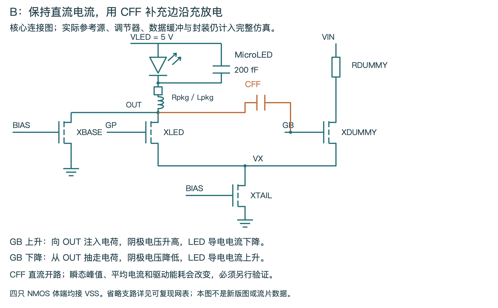
CFF 在直流时开路，因此不靠持续增加尾电流来改变 25/100 µA 的目标。在 0.8 Gb/s 的选定边沿头 200 ps，31.275 fF 电容移走约 85.93 fC 或注入约 74.11 fC，平均位移电流约 −0.430 / +0.371 mA，覆盖所需约 81 fC 的数量级。
这些瞬态电流主要承担结电容充放电；本例 LED 导电电流峰值约 109 µA。不能把位移电流全部当作发光电流。GB 的有限驱动、输出电压变化和封装振铃已包含在真实求解中。
峰值电流可能超出 100 µA，平均电流也可能改变。即使接收变好，也须报告这项代价，不能称为“完全相同光功率下免费提速”。
历史附录 · 第一版第11/24页 · 仅作基线追溯
07B · B：电荷补偿的直接证据
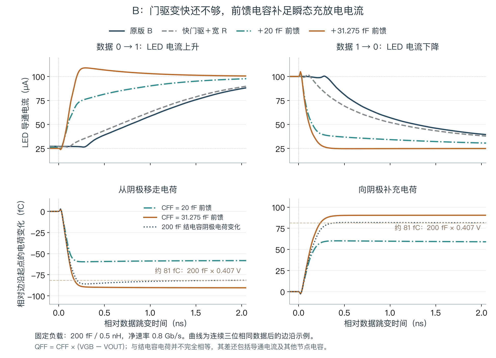
20 fF 与 31.275 fF 都是集中电容对照。后者提供更多边沿电荷，同时带来过冲和额外门极供能。最佳值必须随器件电容、封装、PVT 和真实 MIM 寄生重新确认。
历史附录 · 第一版第12/24页 · 仅作基线追溯
08 · B：有效改善与失败尝试
| 候选 / 净 Gb/s | 位错 | 幅度 µAeq | 时间 bit UI | E+ pJ/尝试位 | 联合筛查 |
|---|---|---|---|---|---|
| B 原版 / 0.80 | 0 | 0.73 | 0.098 | 1.669 | 未通过 |
| B 仅快缓冲 / 0.80 | 4 | -0.51 | 0.000 | 1.682 | 未通过 |
| B 快缓冲 + 宽R / 0.80 | 12 | -1.18 | 0.000 | 1.668 | 未通过 |
| B 仅输入R降低 / 0.80 | 0 | 0.26 | 0.058 | 1.666 | 未通过 |
| B 前馈20fF / 0.80 | 0 | 19.24 | 0.412 | 1.793 | 通过 |
| B 前馈31.275fF / 0.80 | 0 | 32.89 | 0.483 | 1.864 | 通过 |
| B 前馈31.275fF / 1.20 | 0 | 27.18 | 0.465 | 1.352 | 通过 |
| B 前馈31.275fF / 1.60 | 0 | 20.80 | 0.431 | 1.094 | 通过 |
所有结果使用相同负载和接收门槛。能量包含完整帧的七个已实例化电源 / 信号端口。失败点的 pJ/尝试位不是可靠交付有效数据的能效。
历史附录 · 第一版第13/24页 · 仅作基线追溯
08 · B：有效改善与失败尝试（续）
| 候选 / 净 Gb/s | 位错 | 幅度 µAeq | 时间 bit UI | E+ pJ/尝试位 | 联合筛查 |
|---|---|---|---|---|---|
| B 前馈31.275fF / 2.00 | 0 | 13.33 | 0.382 | 0.939 | 通过 |
| B 前馈31.275fF / 2.40 | 0 | 6.65 | 0.302 | 0.834 | 未通过 |
| B 前馈31.275fF / 3.20 | 256 | -3.80 | 0.000 | 0.699 | 未通过 |
所有结果使用相同负载和接收门槛。能量包含完整帧的七个已实例化电源 / 信号端口。失败点的 pJ/尝试位不是可靠交付有效数据的能效。
历史附录 · 第一版第14/24页 · 仅作基线追溯
08B · 在同一 1.6 Gb/s 上比较 A/B
| 项目 | A 改版 | B 改版 |
|---|---|---|
| 完整接收错误 | 0 | 0 |
| 最差幅度 / µAeq | 17.49 | 20.80 |
| 单侧时间 / ps | 216.92 | 233.01 |
| 超过200ps门槛的余量 | 16.92 ps | 33.01 ps |
| E+ / pJ每尝试载荷位 | 1.058 | 1.094 |
| 瞬态导电电流 / µA | 17.19～129.89 | 23.57～112.32 |
| 全电路MOS数 | 20 | 21 |
A 在这个工作点的源端帧能量较低；B 的时序余量更大，并把输出慢尾显著缩短。这是实际的工程取舍，不能只看各自最高速率或错误位数。
B 的 CFF 依赖负载和门极波形，A 的电流依赖输出轨与LED I–V。下一步应比较容差与PVT下是否还能保留这些优势，再决定最终技术主线。
历史附录 · 第一版第15/24页 · 仅作基线追溯
09 · VCSEL：输入与换流负载分别修改
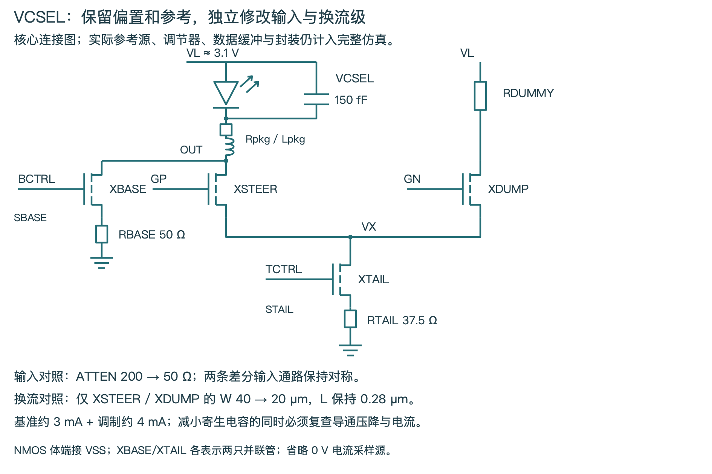
ATTEN 从 200 Ω 降到 50 Ω，同时改变输入 RC 和分压：进入缓冲器的高电平约从 3.000 V 提高到 3.173 V。因此不能把全部收益仅归因于 RC。
换流 MOS 的宽度从 40 µm 减到 20 µm，有望减小门极和扩散负载，但会提高导通电阻并压缩电流合规余量。3/7 mA 的 DC 验证用于确认这项交换没有破坏目标电流。
历史附录 · 第一版第16/24页 · 仅作基线追溯
10 · VCSEL：同速率的因果对照
| 净 6.4 Gb/s 候选 | 幅度 µAeq | 单侧时间 ps | E+ pJ/尝试位 |
|---|---|---|---|
| VCSEL 原版 | 28.65 | 46.42 | 5.952 |
| 仅输入50Ω | 28.97 | 50.62 | 5.987 |
| 仅换流W20µm | 31.02 | 49.50 | 5.843 |
| VCSEL 输入 + 换流改进 | 30.84 | 51.49 | 5.880 |
本速率时序门槛为 50 ps。仅减 ATTEN 时刚过门槛；仅减换流管宽度时略未过。组合修改达到约 51.49 ps，说明两个独立改善确实可以叠加，但剩余约 1.49 ps 仍然很薄。
在相同 6.4 Gb/s 下，组合的正向输入能量约从 5.952 降到 5.880 pJ/尝试位，降低约 1.21%。显式电容储能审计显示改版借能更少约 24.1 pJ，不能用额外借用这部分储能解释约 294.3 pJ 的源端节省；它仍是有限帧结果，未闭合全部器件储能。
7.2 Gb/s 与 8.0 Gb/s 虽仍是短帧零错，却分别只有约 0.331 UI 与 0.240 UI，未通过时序门槛。因此本轮新增的是“6.4 可用研究点”，没有证明净 32 Gb/s。
4.8 → 6.4 是最高已测试通过点的变化。旧版 4.8～6.4 区间没有完整细扫，不能据此声称物理最大速度精确提升 33%。
历史附录 · 第一版第17/24页 · 仅作基线追溯
10B · VCSEL：沿同一时间轴看改善
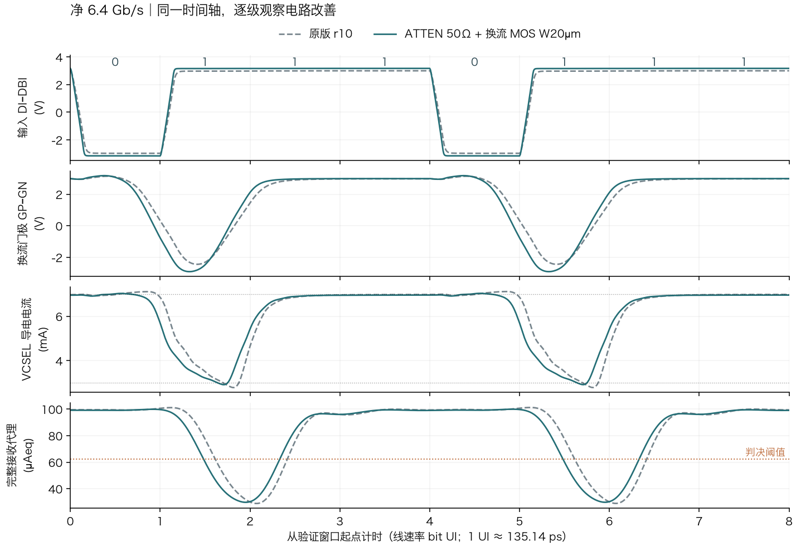
相位选择是接收器的采样设置，不能把其数值误当作独立器件传播延迟。保留各级曲线，可以检查改善究竟来自输入、门极还是输出电流。
历史附录 · 第一版第18/24页 · 仅作基线追溯
11 · 还有多少改善空间
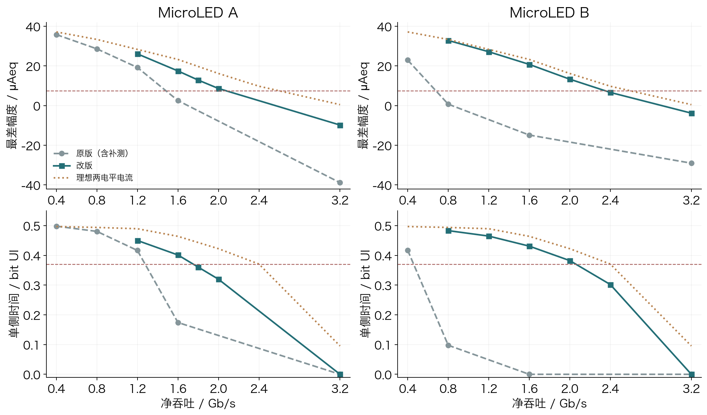
理想 25/100 µA、20 ps 导电电流对照在净 2.0 Gb/s 有较充足余量，2.4 Gb/s 接近时序边界，3.2 Gb/s 即使零错也严重缺少余量。这说明驱动器优化之外，当前光学和接收响应同样限制目标。
这个对照只限制“无预加重的两电平矩形电流”类别。允许额外瞬态峰值、均衡或不同器件响应后，结果可能改变，不能把它当作所有架构的绝对上限。
在 2.4 Gb/s 边界附近，训练相位网格会影响极小余量差异；加密采样与独立相位网格诊断已记录。主比较仍保留原 1/64 UI 相位合同。
历史附录 · 第一版第19/24页 · 仅作基线追溯
11B · 回到净 3.2 Gb/s 的目标
| 最终候选 | 完整接收 错位 / 4096 | 完整接收 幅度 µAeq | 电气接收 时间 / UI |
|---|---|---|---|
| B | 256 | -3.797 | 0.444 |
| A | 451 | -9.801 | 0.412 |
两条改版都重新生成 3.2 Gb/s 激励并实际求解。改善提高了较低速率的可用余量，但尚未达到这个目标。负幅度表示至少有采样值跨到了判决门槛的错误一侧；它不是“还差一点电压”就必然能补齐。
直接用 LED 导电电流作电气接收时，A 约为 24.02 µAeq / 0.4117 UI，B 约为 30.01 µAeq / 0.4443 UI，均零错并通过应力。加上固定 200 ps 光学响应与 1 GHz RX 后才失败。这是两条改版的共同定位结果，不是已经实现 3.2 Gb/s 光链路。
下一步共同检查光学响应、接收带宽和预加重波形，对缺少实测依据的参数继续做敏感性分析。A 仍需控制输出轨漂移和电流尖峰；B 仍需检验前馈电容容差和保护关断。不能仅凭此次两者位错数的差距选定主线。
这轮证据支持 A/B 并行推进，尚不足以选定最终产品架构。净 3.2 Gb/s 和 VCSEL 净 32 Gb/s 继续作为研发目标，不写成已实现规格。
历史附录 · 第一版第20/24页 · 仅作基线追溯
12 · 更快不一定更省电
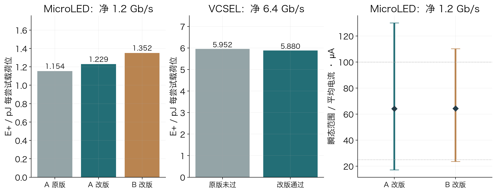
E+ = 完整帧正向输入能量 / 4096 个尝试载荷位。固定参考和供电功耗被更高吞吐分摊后，pJ 数字会下降，但前提是该点满足接收和应力要求。
返能与净能量单独保留。没有假定上游供电芯片能够无损回收返能；也没有把未实例化的参考 IC、接收器、时钟和主机开销算成零。
技术主线应先满足可靠性余量、直流电流和应力约束，再在相同吞吐、负载与系统能源范围内比较能效。不能单凭错误数更少或 pJ 数字更低决定。
历史附录 · 第一版第21/24页 · 仅作基线追溯
13 · 验证是否能站得住
基线复跑复现了前阶段的 A 1.6 Gb/s 和 B 0.8 Gb/s 数值。所有新电路先校准 DC，所有实际速率都重新求解；MOS 应力使用原生求解采样，接收不使用压缩时间轴。
候选边界做最大时间步长减半对照。A 的 1.6/1.8、B 的 2.0/2.4 Gb/s 通过和失败判定均不变，时序变化分别不超过 0.0245 / 0.00045 ps。VCSEL 6.4 Gb/s 的 S40/S80 判定一致，时序变化约 0.0031 ps、能量变化约 −0.0011%。
开发过程中始终使用固定 PRBS 帧便于归因；最终候选另用预先锁定的 0x317E 种子复查。它对应 PRBS15 周期中相隔 16749 位的另一窗口，不根据该结果重新调参。
| 另一 PRBS 窗口 | 幅度 / µAeq | 单侧时间 / UI | 验证位错 |
|---|---|---|---|
| A · 1.6 Gb/s | 17.400 | 0.39858 | 0 / 4096 |
| B · 2.0 Gb/s | 13.309 | 0.38211 | 0 / 4096 |
| VCSEL · 6.4 Gb/s | 31.121 | 0.38774 | 0 / 4096 |
第二个窗口的联合筛查均通过，候选未据此再调参。但它仍不是统计 BER 测量，也没有随机噪声、抖动或真实时钟恢复。
历史附录 · 第一版第22/24页 · 仅作基线追溯
14 · 从电路有效到版图可制造
| 本轮发现 | 影响与下一步 |
|---|---|
| 低阻输入电阻 | 不能只改电阻值。核查高阻 poly 的电流密度、最小尺寸及底板寄生；1 方块最终对照使用更宽几何。 |
| 小值 CFF | 最小 MIM 板和边缘电容限制实际最小值；31.275 fF 是所选模型的名义几何计算，不等于已完成版图。 |
| 3.3 V 快速缓冲 MOS | 仍是硅 CMOS；与 6 V MOS 的差异是器件选项与结构参数，不能继承旧 3.65 V 高供电角。 |
| 输出 MOS 尺寸 | 加宽可能降低导通电阻，也增加门极和扩散电容。VCSEL 减宽有效，A 则需针对实际负载验证，不能一概而论。 |
| 寄生与供电 | VH/VL 的大电容仍是外部无源模型， GHz 下的实际供电轨阻抗尚未验收。新版完整核心需要重新布局、提取、检查 PAD/ESD、回流、供电阻抗和封装；旧 PEX 不覆盖新电路。 |
高阻 poly 规则 · MIM Option B 规则。PDK 规则、模型参数与适用条件保留了具体定位。GF180 的金属层数并不自动指定 MIM 选项或密度，最终须匹配完整 PDK 和制造选项。
本阶段没有新增可流片 GDS、DRC/LVS/PEX 或光学实测。新增电路图是原理连接，不能升级成版图验收证据。
历史附录 · 第一版第23/24页 · 仅作基线追溯
14B · 保护关断不能继承旧结论
本轮通信测试均为已建立偏置、正常使能的工作条件。显示 PWM 支线的启动和保护证据，不能替代高速通信改版的验证。
| 电路 | 目前确知 | 下一步必须验证 |
|---|---|---|
| A 高速核心 | DISABLE 引脚预留，尚未实现关断 | 建立独立关断路径，并检查输出轨在上电、掉电及数据继续翻转时的状态。 |
| B 前馈改版 | DISABLE 可钳位参考源，但 GB 仍可能随数据变化 | 参考关断期间持续发送数据，测 LED 导电电流、位移电荷及过冲；不能只测静止输入。 |
| B 可选补救 | 可冻结互补门极、钳位输入或隔离前馈支路 | 这些属于待测试方案；评估隔离开关的寄生、电压应力及重新使能瞬态，不预先宣称有效。 |
CFF 能改善正常通信充放电，也可能绕过原来的电流关断路径。发现这项边界不推翻正常使能速度结果，但它是新版图和产品化之前的功能门槛。
历史附录 · 第一版第24/24页 · 仅作基线追溯
15 · 下一阶段研发顺序
先冻结有效改法，再扩大验证范围
保留 A/B 双主线。分别以同速率电流、能量、余量和应力建立比较表，继续检查真实参考、供电、阻尼和负载交互。VCSEL 独立推进高速路径，保留慢速偏置和保护。
首先补长帧或周期通信稳态、真实轨电流与储能闭合。当前A的VH有约2.1mV帧内漂移，有限帧能量不能直接当连续运行效率。随后增加 MOS/电阻工艺角、供电、温度、封装与关键无源容差。3.3 V 缓冲候选先建立新的电源上限；不能简单复用旧 3.65 V 角。当前发光模型缺少温度拟合，电路角验证也不等于完整光源温度验证。
当候选在上述扰动下仍有余量，再做完整高速核心布局和 PEX。若固定光学 / RX 仍限制净 3.2 或 32 Gb/s，就依据链路预算选择更快光源、接收器、均衡或工艺，而不继续盲目调整晶体管。
本阶段真正积累的能力
把错误定位到具体参考面；用单项修改验证原因；用 DC、波形、能量和应力共同判断；记录无效尝试；明确下一步要测什么。这条可复现的解决问题流程，比单一峰值数字更有价值。